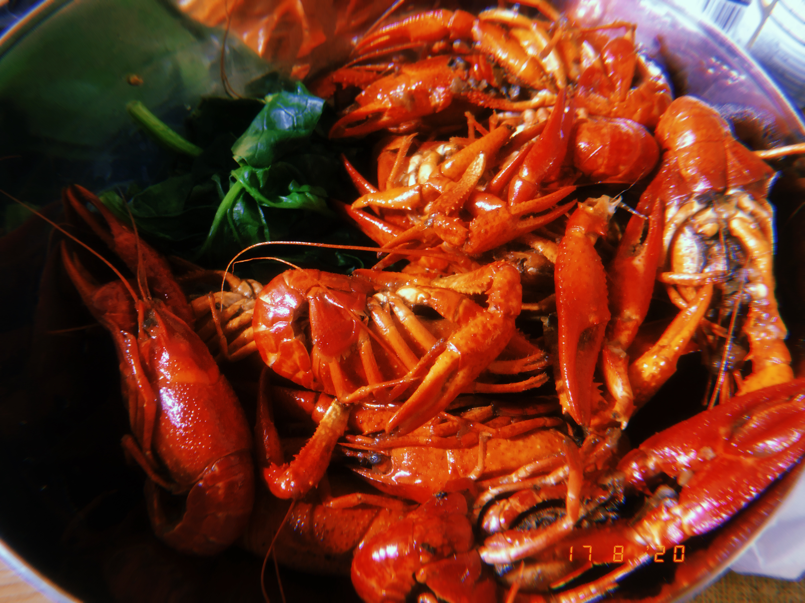
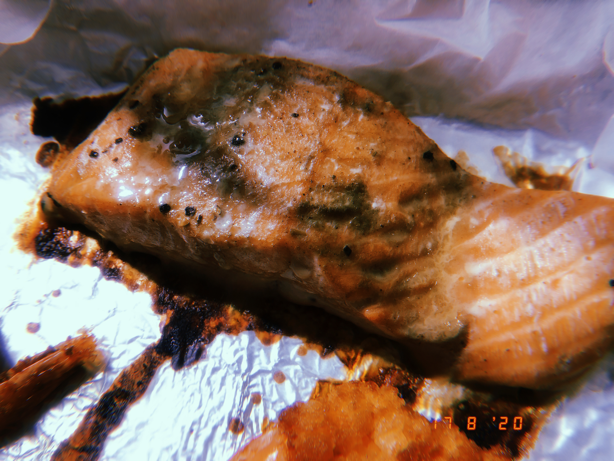

My recipe share some home-cooked dishes that you can make at home too. Do you want to try them yourself after you've seen them? Let's share!

INGREDIENTS
For Spicy crayfish
Crawfish
1/2 Avocado
Salt and Pepper
Your Favorite Sauce
LET'S MAKE It!
DIRECTIONS
- Stir-fry with oil and pepper until fragrant.
- While the pepper is smells good, Add the crayfish in the picture.
- Once the crayfish is ready, Add the sauce you want.
- Finally simmer for ten minutes.
For Green bean noodles

In just 4 simple steps your Green bean noodles is ready. :)
DIRECTIONS
- Drain oil and beans.
- While the green beans is smells good, Add the noodles.
- Once the noodles is ready, Add the sauce you want.
- Finally simmer for ten minutes.
For Grilled salmon-Healthy and simple

DIRECTIONS
- Marinate the salmon with seasoning for half an hour.
- Marinate the salmon with seasoning for half an hour.
- When done, add the black pepper.
- To complete!